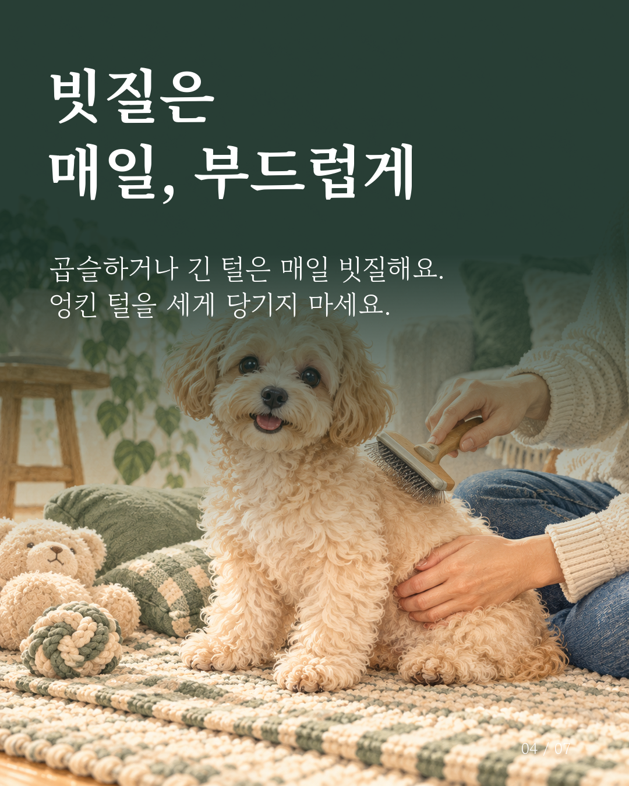
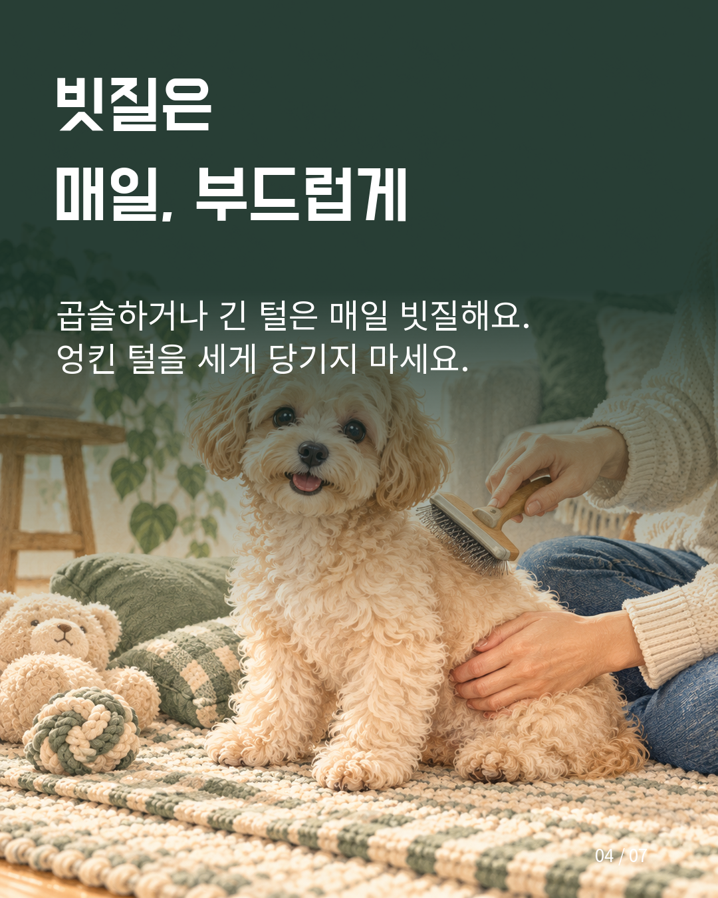
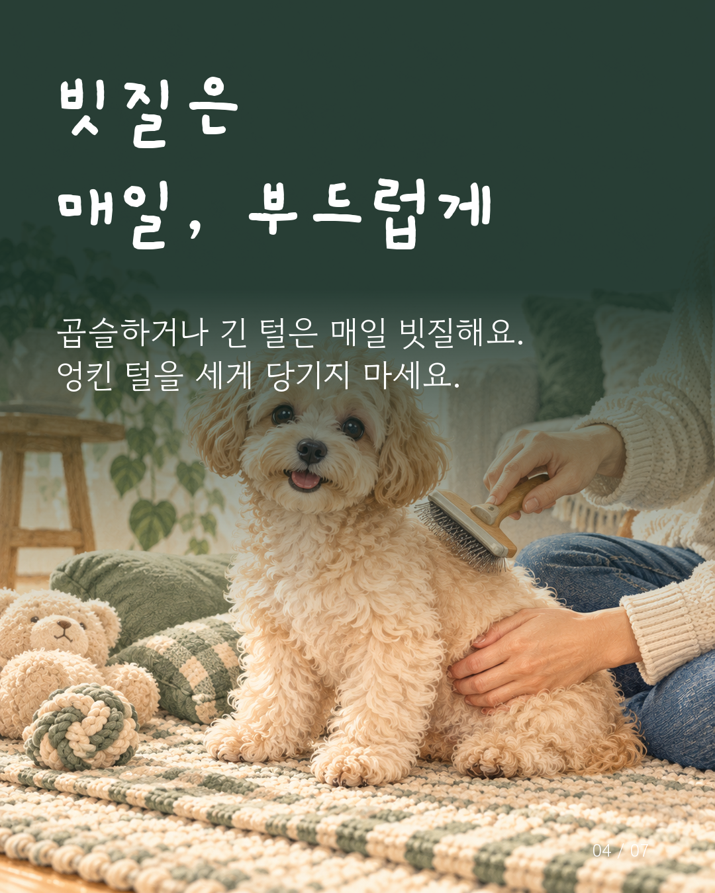
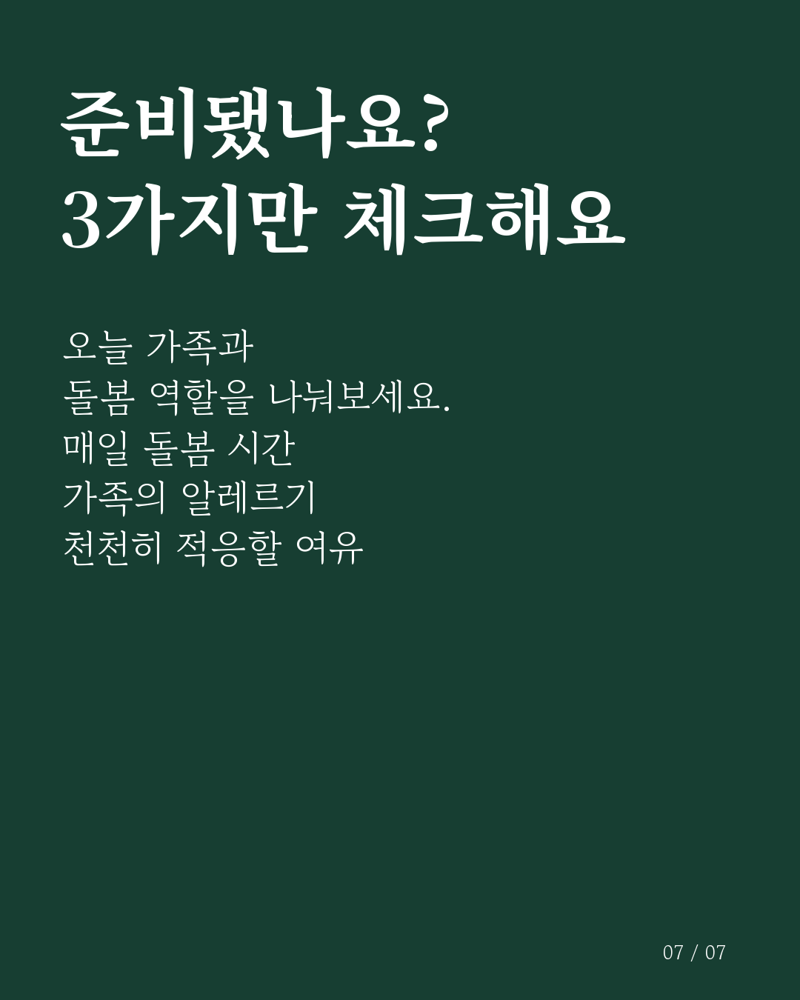
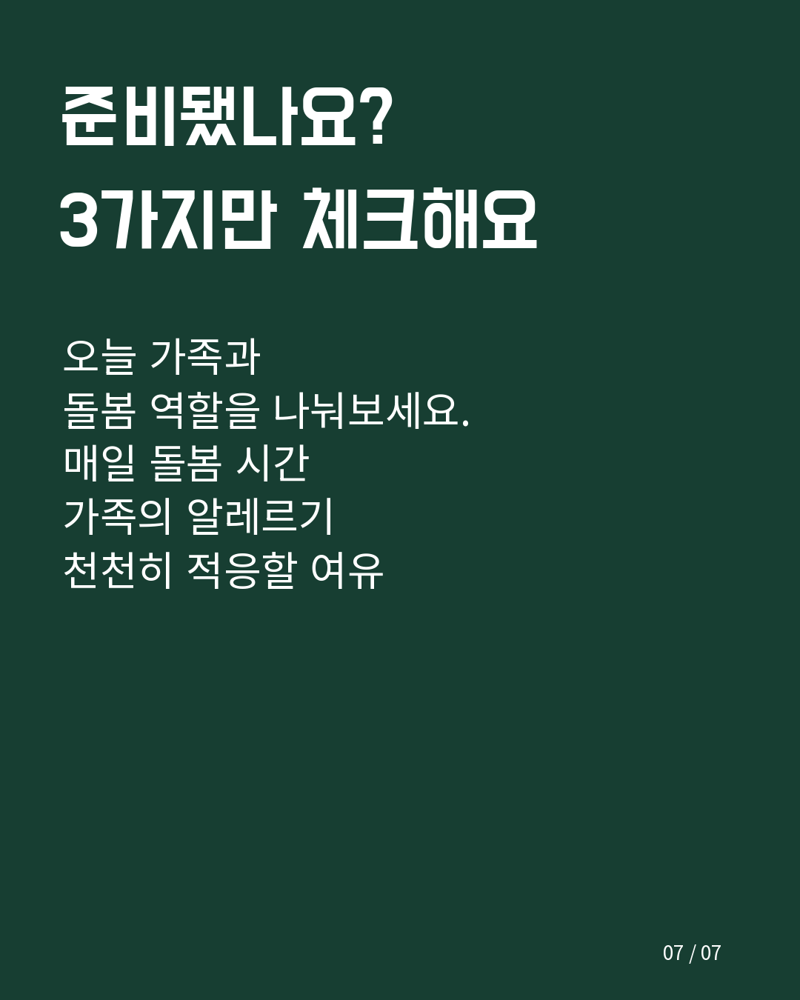
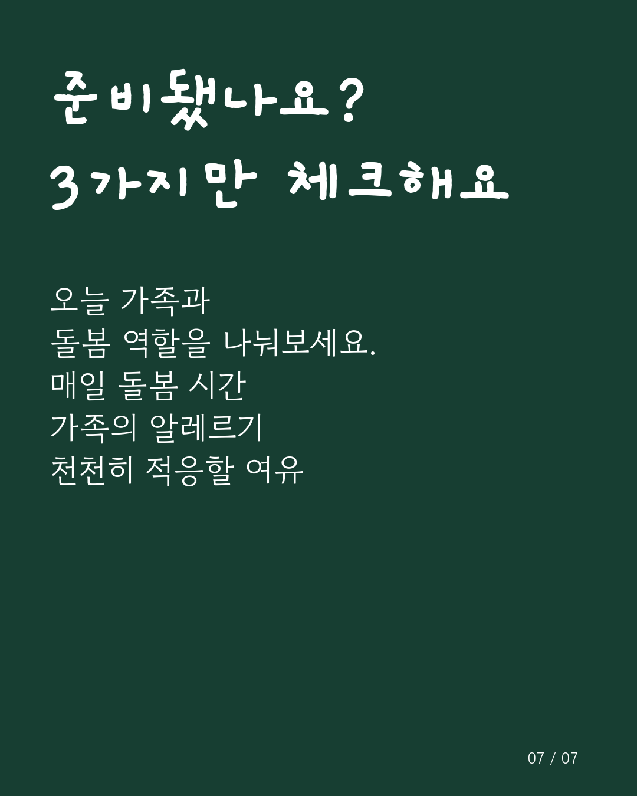

세리프

제목 Noto Serif KR 700 · 본문 고운바탕 400
제목 100px · 본문 48px
같은 문구와 사진으로 비교합니다. 각 스타일의 글자 크기와 제목·본문 간격을 함께 보정했습니다. 이미지를 누르면 원본 크기로 볼 수 있어요.
4번은 저장된 사진 배치를 사용했고, 7번은 텍스트형 구성으로 비교했습니다. 손글씨는 제목에만 사용하고 본문은 읽기 편한 고운돋움입니다. 비교 이미지는 별도로 만들었으며 편집기의 저장본은 바뀌지 않습니다.

제목 Noto Serif KR 700 · 본문 고운바탕 400
제목 100px · 본문 48px

제목 도현체 · 본문 Noto Sans KR 400
제목 105px · 본문 50px

제목 개구 700 · 본문 고운돋움 400
제목 118px · 본문 50px

제목 Noto Serif KR 700 · 본문 고운바탕 400
제목 100px · 본문 52px

제목 도현체 · 본문 Noto Sans KR 400
제목 105px · 본문 55px

제목 개구 700 · 본문 고운돋움 400
제목 118px · 본문 55px